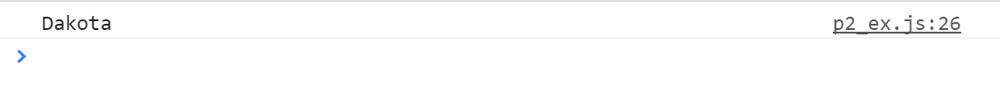

Making AJAX requests across different domains
Now that we have the URL for a JSON request, we need to deal with the issue of making AJAX requests across domains. Let's say that we simply want to log the name of this cat to the console. An XMLHttpRequest will throw an error, as demonstrated below. The Petfinder API is not allowing us to make the request from a domain other than petfinder.com. Some APIs do allow you to make standard XMLHttpRequests from a different domain, but this particular API does not.
We won't worry too much about what exactly is happening here, since it's not going to work, but if you'd like to learn more about the XMLHttpRequest, check out the chapter on HTTP in Eloquent Javascript by Marijn Haverbeke.
var req = new XMLHttpRequest();
req.open('GET', "http://api.petfinder.com/pet.get?format=json&key=yourkeyhere&id=35023361", true);
req.addEventListener('load', function () {
if (req.status >= 200 && req.status < 400) {
var response = JSON.parse(req.responseText);
console.log(response.petfinder.pet.name.$t);
}
});
req.send(null); One way to get around this, which is mentioned under Request Format, Cross-Domain Support (JSONP) in the Documentation, is to use JSONP. This Stack Overflow question's top answers explain JSONP very concisely.
The function requestJSONP inserts a script, the source of which is the URL passed to it (here, assigned to the variable url), at the head of the HTML page.
The getKitty function contains the desired actions to perform on the JSON response object. What we need to do to call this function is add another query to our URL, ?callback. In the example below, the function is called getKitty, so we add &callback=getKitty to the URL.
function requestJSONP(url) {
var script = document.createElement('script');
script.src = url;
document.getElementsByTagName('head')[0].appendChild(script);
}
function getKitty(data) {
console.log(data.petfinder.pet.name.$t);
}
var url = 'http://api.petfinder.com/pet.get?format=json&key=yourkeyhere&id=35023361&callback=getKitty';
requestJSONP(url); This time, instead of an error message, the name of the cat is logged to the console as expected!
Copyright © Morgan Brenner · 2016